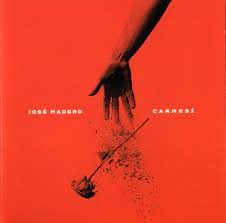
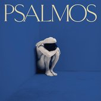
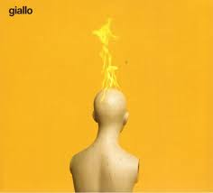

Presiona cada disco para conocer su tracklist
| Portada | Disco | Año | Resumen |
|---|---|---|---|
|  | Carmesi | 2016 | Carmesí es el primer álbum de estudio de José Madero, quien fue vocalista de la banda mexicana de rock alternativo Panda desde su formación en 1996, hasta su descanso indefinido en 2016. Fue lanzado el 29 de abril del 2016 y fue certificado en octubre del mismo año como disco de oro por sus altas ventas. |

|
Noche | 2017 | Noche es el segundo álbum de estudio de José Madero. Fue lanzado el 28 de julio de 2017 y contiene trece canciones. |
| Alba | 2018 | Alba es el nombre del tercer álbum de estudio de José Madero, lanzado el 16 de marzo de 2018 exclusivamente en formato digital y el 27 de abril del mismo año con una edición de copias físicas limitadas. El álbum contiene diez canciones. | |
|  | Psalmos | 2019 | Psalmos es el nombre del cuarto álbum de estudio de José Madero, lanzado el 6 de septiembre de 2019. El álbum contiene 12 canciones y tiene un sonido más apegado al britpop, según palabras de su autor. |
|  | Giallo | 2022 | Giallo es el quinto álbum de estudio de José Madero, ex-integrante de Panda. Durante el otoño de 2020, el cantautor confirmó que ya se encontraba en el estudio de grabación preparando esta quinta entrega a través de sus historias y publicaciones en Instagram. |